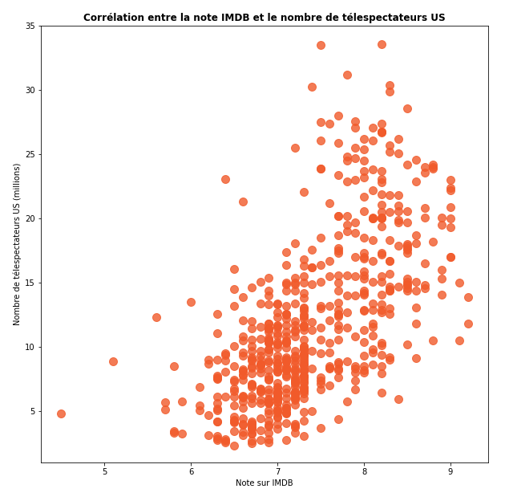

Les Simpson est l'une des séries les plus cultes de tous les temps. Mais comment les épisodes ont-ils été accueillis par le public ?
À l'été 2022, la série compte 727 épisodes répartis en 33 saisons.
Le nombre moyen d'épisodes par saison est de 22.
La première saison est la plus courte, avec seulement 13 épisodes. Les saisons les plus longues sont les saisons 6 à 9, avec 25 épisodes chacune.
L'épisode le mieux noté sur IMDB est l'épisode 23 de la saison 8 (176ème épisode de la série). Il a obtenu une note moyenne de 9.3/10 décernée par 5854 utilisateurs.
Diffusé pour la première fois le 4 mai 1997, cet épisode s'intitule 'Homer's Enemy'.
Voici son résumé: "Homer's laziness begets the ire of his industrious but arrogant new co-worker Frank Grimes; Bart buys a run-down factory for a dollar".
Vous trouverez ci-dessous le détail des meilleurs épisodes par saison :
| Saison | Episode | Titre | Résumé | Date | Note IMDB |
|---|---|---|---|---|---|
| 1 | 12 | Krusty Gets Busted | After Krusty is found guilty of robbing the Kwik-E-Mart following Homer's eyewitness testimony, Bart and Lisa set out to prove his innocence. | 29 Apr. 1990 | 8.3 |
| 2 | 11 | One Fish, Two Fish, Blowfish, Blue Fish | After apparently consuming poison blowfish, Homer is told that he only has 24 hours to live. | 24 Jan. 1991 | 8.8 |
| 3 | 10 | Flaming Moe's | Moe claims a drink that Homer invented is his own, with the drink making the bar a local hot spot, but threatens his friendship with Homer. | 21 Nov. 1991 | 8.8 |
| 4 | 12 | Marge vs. the Monorail | After receiving a considerable donation of money, Springfield builds a monorail system with Homer as the conductor, unaware they've just boarded a one-way train to Hell. | 14 Jan. 1993 | 9.1 |
| 5 | 2 | Cape Feare | After being released from prison on parole, Sideshow Bob plots to murder Bart. | 7 Oct. 1993 | 9.1 |
| 6 | 6 | Treehouse of Horror V | The family's job at Mr. Burns' country estate goes awry when Homer goes mad; Homer's attempt to repair a toaster results in inadvertent time travel; The school staff turn cannibalistic. | 30 Oct. 1994 | 9.2 |
| 7 | 1 | Who Shot Mr. Burns? Part Two | Mr. Burns is laying in the hospital while the investigation into his shooter begins. Every citizen has motivation, but it's Simpson DNA that has been found. | 17 Sep. 1995 | 9.0 |
| 8 | 23 | Homer's Enemy | Homer's laziness begets the ire of his industrious but arrogant new co-worker Frank Grimes; Bart buys a run-down factory for a dollar. | 4 May 1997 | 9.3 |
| 9 | 1 | The City of New York vs. Homer Simpson | Homer must travel to New York to get his car back, which is illegally parked at World Trade Center Plaza. | 21 Sep. 1997 | 9.0 |
| 10 | 2 | The Wizard of Evergreen Terrace | Homer's midlife crisis leads to a disastrous attempt at being an inventor. | 20 Sep. 1998 | 8.1 |
| 11 | 22 | Behind the Laughter | Fans are invited to take a behind-the-scenes look at "The Simpsons," revisiting some of the most memorable experiences the family has been through. | 21 May 2000 | 7.9 |
| 12 | 18 | Trilogy of Error | Homer's rush to the hospital to re-attach his severed thumb, Lisa's rush to school to win the science fair, and Bart's run-in with an illegal fireworks scheme interconnect from their point of view. | 29 Apr. 2001 | 8.6 |
| 13 | 22 | Papa's Got a Brand New Badge | Homer becomes chief of police after a scandal forces Wiggum out. | 22 May 2002 | 7.8 |
| 14 | 1 | Treehouse of Horror XIII | Homer clones himself with a magic hammock; Zombie cowboys come back from the dead after Springfield bans guns; The Simpsons family take a vacation on an island where Dr. Hibbert can turn people into animals. | 3 Nov. 2002 | 7.6 |
| 15 | 1 | Treehouse of Horror XIV | First, Homer kills the Grim Reaper and takes his place in Reaper Madness. Then, Professor Frink's father is revived, only to kill people and steal their organs in Frinkenstein. Finally, Bart and Milhouse get a stop watch that can stop time in Stop the World, I Want To Goof Off. | 2 Nov. 2003 | 7.5 |
| 16 | 16 | Don't Fear the Roofer | Homer meets a new friend, Ray the Roofer, but gets confined to a mental institution when his friends and family think he made him up. | 1 May 2005 | 7.5 |
| 17 | 13 | The Seemingly Never-Ending Story | In this story within a story within a story within a story, a cave-exploring expedition, an angry sheep and a lovestruck Moe become inextricably entwined. | 12 Mar. 2006 | 7.6 |
| 18 | 21 | 24 Minutes | Bart and Lisa join forces to stop the school bullies from setting off a stink bomb at the school bake sale. | 20 May 2007 | 8.1 |
| 19 | 9 | Eternal Moonshine of the Simpson Mind | Homer goes to Dr. Frink to help him recover his memories from the night before, and he discovers, based on his interpretation of the memories, that Marge is having an affair. | 16 Dec. 2007 | 8.2 |
| 20 | 21 | Coming to Homerica | Townspeople build a wall around Springfield to keep "immigrants" from Ogdenville from relocating to their town. | 17 May 2009 | 7.3 |
| 21 | 4 | Treehouse of Horror XX | Lisa becomes livid with Miss Hoover, and in a series of homages to classic Hitchcock sets out for deadly revenge. Next, Krusty's latest fast-food sandwich transforms news anchor Kent Brockman into an enraged zombie and twenty-eight days later, cannibal zombies have overrun Springfield. In the final frightening fable, Homer accidentally falls through a trapdoor in Moe's tavern and impales himself on the pipes of Moe's microbrewery. Moe serves the barflies a glass of delicious beer flavored with Homer's blood and Homer, now half-man, half-brewing apparatus, returns for vengeance. | 18 Oct. 2009 | 7.3 |
| 22 | 21 | 500 Keys | While Homer takes the Duff Blimp for a joyride, Lisa discovers a secret room in the basement of Sprinfield Elementary School. | 15 May 2011 | 7.3 |
| 23 | 9 | Holidays of Future Passed | Thirty years in the future the Simpsons get together for Christmas. Bart and Lisa are struggling as parents to connect with their children. | 11 Dec. 2011 | 8.3 |
| 24 | 2 | Treehouse of Horror XXIII | A black hole threatens to swallow Springfield, Homer tries to find the source of paranormal activity, and a "Back to the Future" parody in which Bart keeps Marge from marrying Homer. | 7 Oct. 2012 | 7.2 |
| 25 | 20 | Brick Like Me | The Lego version of Homer begins to suspect that his entire Lego world is not real when a toy triggers a flashback to an alternate reality. | 4 May 2014 | 7.9 |
| 26 | 6 | Simpsorama | The Simpsons meet the Planet Express crew, who have come to Springfield in the present to stop them from destroying the future. | 9 Nov. 2014 | 7.9 |
| 27 | 9 | Barthood | A tale of Bart's journey from youth to adulthood, where he is constantly in search of approval from his father and in the shadow of his more-successful younger sister. | 13 Dec. 2015 | 8.4 |
| 28 | 3 | The Town | Homer takes the family on a "hate-cation" to Boston after he catches Bart rooting for a rival football team. | 9 Oct. 2016 | 7.0 |
| 29 | 21 | Flanders' Ladder | When Bart falls into a coma after he is struck by lightning, he is visited by ghosts seeking closure. | 20 May 2018 | 7.5 |
| 30 | 5 | Baby You Can't Drive My Car | A self-driving car company comes to Springfield, poaching all of the power plant employees with their fun work environment. | 4 Nov. 2018 | 6.9 |
| 31 | 22 | The Way of the Dog | The Simpsons explore the tragic past of Santa's Little Helper when he bites Marge. | 17 May 2020 | 7.4 |
| 32 | 22 | The Last Barfighter | A secret society of bartenders seeks revenge on Homer and his friends when Moe breaks their most sacred rule. | 23 May 2021 | 7.4 |
| 33 | 6 | A Serious Flanders | Homer and Ned get sucked into the violent world of prestige TV when a ruthless debt collector comes to Springfield. | 7 Nov. 2021 | 8.2 |
L'épisode le moins bien noté est l'épisode 22 de la saison 23 (508ème épisode de la série). Il a obtenu une note moyenne de 4.0/10 attribuée par 2981 utilisateurs d'IMDB.Cet épisode est intitulé 'Lisa Goes Gaga' et a été diffusé pour la première fois le 20 mai 2012.
Voici son résumé: "After a desperate attempt by Lisa to become more popular backfires, Lady Gaga shows up in Springfield to help her with her self-esteem".
Vous trouverez ci-dessous le détail des pires épisodes par saison :
| Saison | Episode | Titre | Résumé | Date | Note IMDB |
|---|---|---|---|---|---|
| 1 | 3 | Homer's Odyssey | After losing his job, Homer contemplates ending it all, until he discovers a new life path as a safety advocate. | 21 Jan. 1990 | 7.3 |
| 2 | 5 | Dancin' Homer | Homer's heckling of the Springfield Isotopes baseball team during one of their games inadvertently leads to his appointment as the new team mascot. | 8 Nov. 1990 | 7.4 |
| 3 | 6 | Like Father, Like Clown | Bart and Lisa try to reunite Krusty the Clown with his father. | 24 Oct. 1991 | 7.6 |
| 4 | 18 | So It's Come to This: A Simpsons Clip Show | As Homer recovers in hospital due to Bart's disastrous April Fool's Day prank, the family reminiscences over earlier hardships. | 1 Apr. 1993 | 7.0 |
| 5 | 21 | Lady Bouvier's Lover | Grampa falls in love with Marge's mother, but must compete with Mr. Burns for her heart. | 12 May 1994 | 7.5 |
| 6 | 3 | Another Simpsons Clip Show | The family recalls past tales of lost love. | 25 Sep. 1994 | 5.8 |
| 7 | 10 | The Simpsons 138th Episode Spectacular! | Troy McClure hosts a retrospective of the first 137 episodes of Les Simpson (1989). | 3 Dec. 1995 | 7.4 |
| 8 | 24 | The Simpsons Spin-Off Showcase | Troy McClure presents three spinoffs: "Chief Wiggins, P.I.," "The Love-Matic Grandpa," and "The Simpson Family Smile-Time Variety Hour." | 11 May 1997 | 7.1 |
| 9 | 11 | All Singing, All Dancing | Homer is disappointed when the western he rented turns out to be a musical, so the family reminds him of the musical moments in the show's history. | 4 Jan. 1998 | 5.0 |
| 10 | 12 | Sunday, Cruddy Sunday | Homer and his friends head to the Super Bowl, but are forced to sneak in when they discover their tickets are counterfeit. | 31 Jan. 1999 | 7.0 |
| 11 | 13 | Saddlesore Galactica | The Simpsons get an abused horse and make him a contender in horse racing. Homer finds out a secret conspiracy about jockeys. Lisa tries to reach President Clinton when the results of a school band talent competition seem tainted. | 6 Feb. 2000 | 6.5 |
| 12 | 16 | Bye Bye Nerdy | Problems with a bully lead Lisa to examine just what makes bullies aggressive. Meanwhile, Homer gets into the baby-proofing business. | 11 Mar. 2001 | 6.7 |
| 13 | 17 | Gump Roast | In this clip show, the citizens of Springfield honor Homer Simpsons with a Roast, but the festivities take a turn for the worst when aliens crash it. | 21 Apr. 2002 | 5.5 |
| 14 | 21 | The Bart of War | Bart and Milhouse are forced into community service after destroying Flanders' memorial and join separate community groups, pitting themselves against each other. | 18 May 2003 | 6.6 |
| 15 | 21 | Bart-Mangled Banner | An accidental photo showing Bart mooning the American flag makes the Simpsons the most hated family in town. | 16 May 2004 | 6.4 |
| 16 | 8 | Homer and Ned's Hail Mary Pass | A video of Homer dancing becomes so popular that all major sports players hires Homer to design celebration dances for them. | 6 Feb. 2005 | 6.3 |
| 17 | 1 | The Bonfire of the Manatees | When Marge leaves Homer because he allowed an adult movie being shot in their house, she seeks self fulfillment in protecting manatees. | 11 Sep. 2005 | 6.2 |
| 18 | 18 | The Boys of Bummer | Bart becomes the most hated person in Springfield after he is the goat in a championship baseball game, and Homer's new job as a mattress salesman ruins his and Marge's sex life. | 29 Apr. 2007 | 6.0 |
| 19 | 16 | Papa Don't Leech | When the Simpsons discover that Lurleen Lumpkin is on the skids, Marge reluctantly agrees to take her in and help her find her deadbeat dad who abandoned her 30 years ago. | 13 Apr. 2008 | 6.1 |
| 20 | 9 | Lisa the Drama Queen | Lisa and her new best friend create their own fantasy world, but Marge doesn't want Lisa to see her friend anymore after she finds out that they're too far gone in it. | 25 Jan. 2009 | 6.0 |
| 21 | 16 | The Greatest Story Ever D'ohed | Ned takes the Simpsons on a pilgrimage to Israel in order to try and save Homer, but soon discovers that he may not be worth saving. | 28 Mar. 2010 | 5.7 |
| 22 | 16 | A Midsummer's Nice Dreams | After Tommy Chong walks away from the Cheech & Chong reunion tour, Homer goes on the road as his replacement. Meanwhile, Marge tries to help the cat lady with her hoarding problem. | 13 Mar. 2011 | 6.1 |
| 23 | 22 | Lisa Goes Gaga | After a desperate attempt by Lisa to become more popular backfires, Lady Gaga shows up in Springfield to help her with her self-esteem. | 20 May 2012 | 4.0 |
| 24 | 14 | Gorgeous Grampa | Homer's obsession with the TV show "Storage Battles" leads the family to discover Grampa's past identity as "Gorgeous Godfrey," the most feared, villainous man in pro-wrestling history. | 3 Mar. 2013 | 6.2 |
| 25 | 19 | What to Expect When Bart's Expecting | Bart becomes a savior to Springfield couples trying to conceive when he inadvertently uses voodoo to get his art teacher pregnant. | 27 Apr. 2014 | 5.8 |
| 26 | 12 | The Musk Who Fell to Earth | Inventor Elon Musk comes to Springfield, and Homer inspires him with a new idea that could revolutionize Springfield, but winds up costing Mr. Burns a ton of money. | 25 Jan. 2015 | 5.6 |
| 27 | 1 | Every Man's Dream | Marge decides it's finally time to separate from Homer, and quickly moves on with her life. Homer is initially devastated, but soon stumbles into a romance with a younger woman. | 27 Sep. 2015 | 5.7 |
| 28 | 10 | The Nightmare After Krustmas | Krusty and his daughter spend Christmas with the Simpsons; Reverend Lovejoy seeks converts to boost attendance at church; A Christmas toy scares Maggie. | 11 Dec. 2016 | 5.9 |
| 29 | 14 | Fears of a Clown | Bart goes to prankster rehab after a clown-mask prank terrifies the town and ruins Krusty's career causing him to give up comedy and try serious drama. | 1 Apr. 2018 | 6.0 |
| 30 | 18 | Bart vs. Itchy & Scratchy | Bart's friends start a boys rights activist group to protest Krusty's all-female reboot of Itchy and Scratchy. When they catch Bart enjoying it, they kick him out, so he joins Bossy Riot, a militant feminist gang of sixth-grade girls. | 24 Mar. 2019 | 4.9 |
| 31 | 6 | Marge the Lumberjill | Marge becomes a competitive lumberjack and goes on a month-long retreat to Portland with her trainer, whom Homer fears will take his wife away from him. | 10 Nov. 2019 | 5.6 |
| 32 | 14 | Yokel Hero | Cletus becomes a singing sensation and ruins everything when he turns on his fans, while Homer becomes a new man. | 7 Mar. 2021 | 5.5 |
| 33 | 1 | The Star of the Backstage | Marge stages a revival of a musical from high school, but her pleasant memories are threatened by the return of her old rival. | 26 Sep. 2021 | 4.3 |
Comme on le constate, les saisons 2 à 8 sont considérées comme étant les meilleures, avec des notes IMDB moyennes dépassant 8/10.
Après une fantastique saison 7, la diminution de la qualité est rapide jusqu'à la saison 11. Par la suite, les notes IMDB passent progressivement de 7/10 à 6,5/10 en moyenne. La saison 30 est considérée comme la pire, avec un score de 6,15/10.
Nous avons accès au nombre de télespectateurs US pour chaque épisode jusqu'à la saison 28 comprise.
Sur cette période, la moyenne de télespectateurs US était de 11,8 millions par épisode.
L'épisode ayant rassemblé le plus de télespectateurs est l'épisode 1 de la saison 2 : "Bart Gets an 'F'". Diffusé le 11 octobre 1990, son résumé est le suivant : "Mrs. Krabappel, fed up with Bart's lackadaisical approach to his studies, gives him an ultimatum: shape up or repeat the fourth grade."
L'épisode le moins vu lors de sa diffusion est "The Burns Cage", l'épisode 17 de la saison 27 sorti le 3 avril 2016. Voici son résumé : "Homer tries to raise Smithers' spirits by finding him a man, and Lisa gets the lead in the school production of "Casablanca" alongside a new male student, sparking Millhouse's jealousy".
Comme c'est souvent le cas pour les séries, les premières saisons attirent le plus de télespectateurs. Alors que les épisodes de la saison 1 étaient suivis par près de 28 millions de télespectateurs en moyenne, ce nombre décroît lors des dix saisons suivantes.
Entre les saisons 12 à 14, la série connaît un nouveau pic de popularité relatif. Bien que se comptant toujours en millions, les audiences ne cessent de diminuer par la suite, sans doute en raison de la dégradation de la qualité de la série et de la concurrence des sites de vidéo en streaming.
Nous avons tenté d'identifier certains rapports de corrélation.
On remarque une certaine corrélation entre la note sur IMDB et le nombre d'avis sur IMDB. Toutefois, il faut garder à l'esprit qu'il existe un "effet temps" pour le nombre d'avis sur IMDB : plus un épisode est ancien, plus les utilisateurs ont eu le temps de le noter sur IMDB. Or nous avons remarqué que la qualité de la série décroît au fil du temps. Le temps pourrait donc être une autre variable explicative.
On observe également une certaine corrélation entre la note sur IMDB et le nombre de télespectateurs.